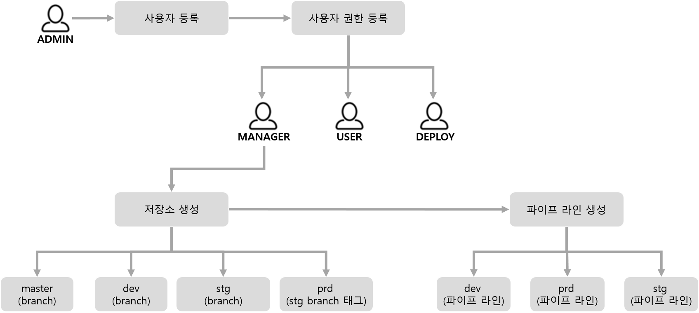
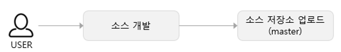
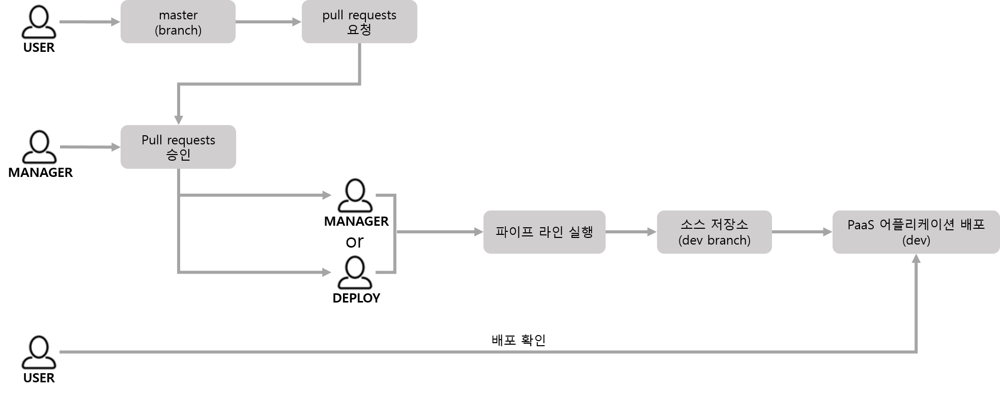
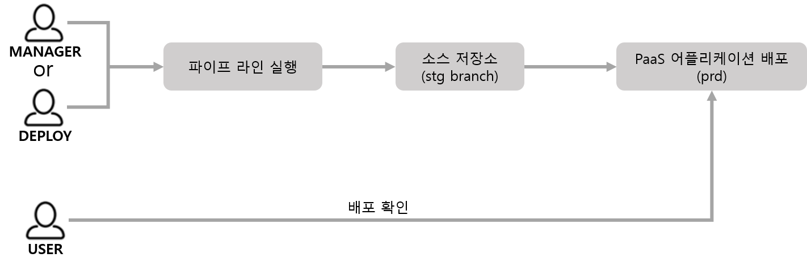

PaaSXpert 사용 절차
- PaaSXpert 포털을 사용하여 어플리케이션을 개발, 운영하기 위해서는 다음과 같은 절차에 따라 진행한다.
1. 개발 단계
1.1. 초기 환경 설정
-
사용자를 권한 별로 등록한다.
-
소스 저장소와 파이프라인을 생성한다.

1.2. 개발 소스 반영
- 개발된 소스를 소스 저장소에 업로드 한다. 개발자가 업로드하는 소스의 Git Branch는 master 로 지정 한다.

1.3. 어플리케이션 PaaS 에 개발 배포
- 개발 완료된 master branch 의 소스 Commit을 Pull Requests 생성
- MANAGER 사용자의 Pull Requests 승인
- 개발(dev) 파이프라인을 실행한다.
- 파이프라인 프로세스에서 소스 저장소에 있는 master 브랜치의 소스를 dev 브랜치로 복사한 후 dev 브랜치의 소스를 PaaS 에 배포한다.
- PaaS 의 개발 영역 (개발 네임스페이스)에 배포된다.
- 개발자가 배포를 확인한다.
a. PaaS > 워크로드 조회 > 파드 조회 > 로그 조회
b. PaaS > 워크로드 조회 > 파드 조회 > 로드밸런스 > 호스트 링크 확인

1.4. 개발/배포 반복
- 1.1. 과 1.2. 을 반복하며 개발된 소스를 배포하고 확인하며 최종 개발을 완료해 나간다.
2. 운영 단계
2.1. 어플리케이션 PaaS 에 배포
- 운영(prd) 파이프라인을 실행한다.
- 파이프라인 프로세스에서 소스 저장소에 있는 dev 브랜치의 소스를 prd 브랜치로 복사한 후 prd 브랜치의 소스를 PaaS 에 배포 한다.
- PaaS 의 운영 영역(운영 네임스페이스)에 배포된다.
- 개발자가 배포를 확인한다.
a. PaaS > 워크로드 조회 > 파드 조회 > 로그 조회
b. PaaS > 워크로드 조회 > 파드 조회 > 로드밸런스 > 호스트 링크 확인
